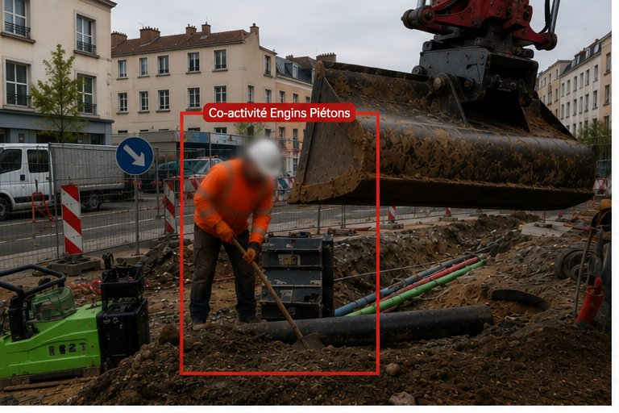
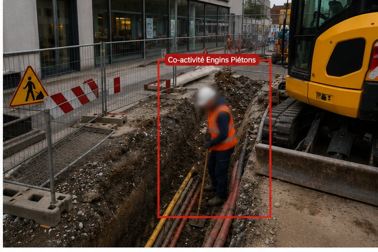
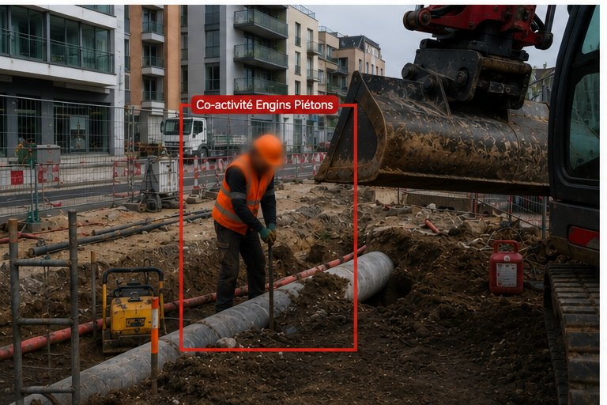
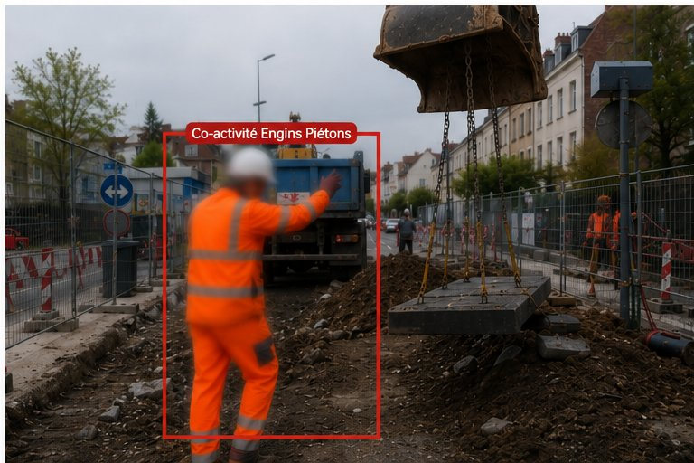
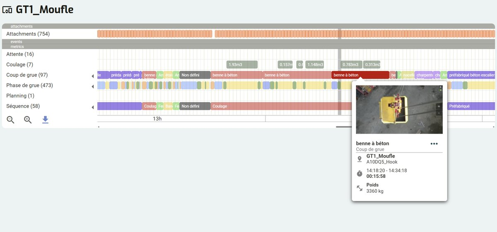
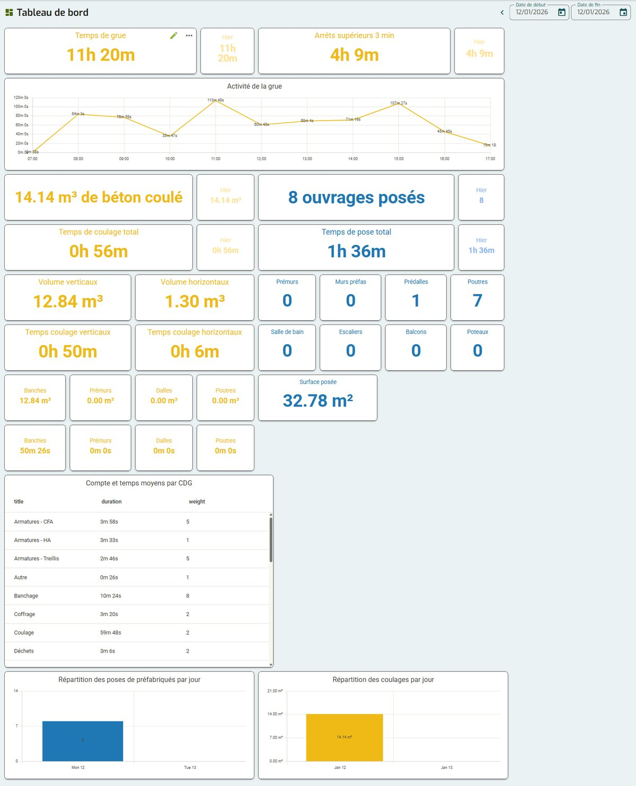
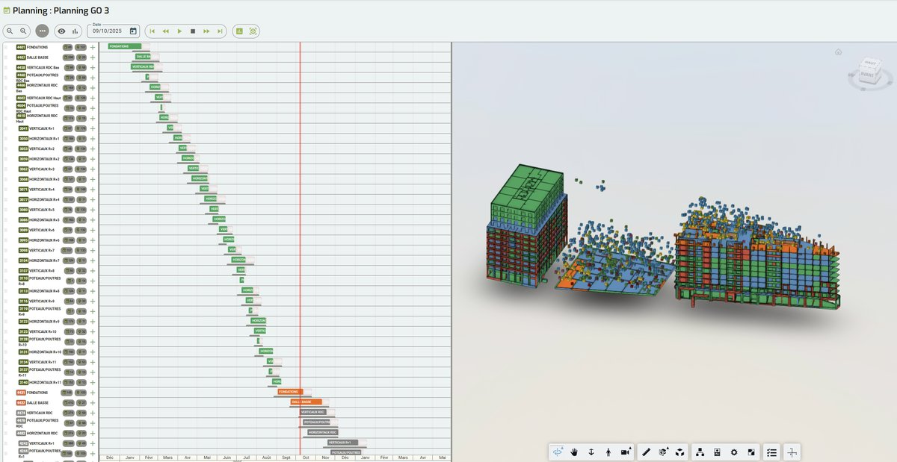
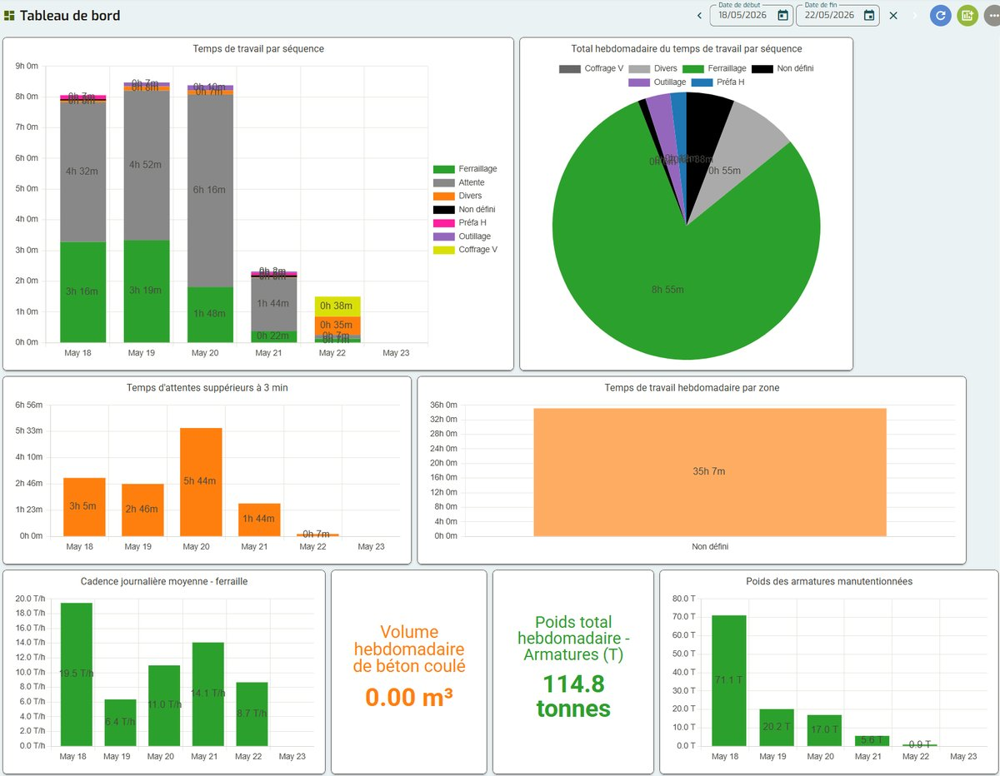

Organisme de formation certifié Qualiopi — HSE, Lean et IA pour les professionnels du BTP et de l'Industrie
Formations Prévention et Productivité BTP grâce à l'IA
Prévention & HSE
Maîtrisez vos risques sur chantier grâce à l'IA
Productivité & Lean
Mesurez et optimisez la productivité de vos chantiers grâce à l'IA
En 3 visites, vos équipes développent des compétences durables — et deviennent autonomes.
Ils nous font confiance
Nos premières sessions sont évaluées, nos formations sont sur le terrain et nos partenaires technologiques nous accompagnent dans le déploiement.
LOGO
Indicateurs consolidés à l'issue de chaque session — détail sur notre page qualité.
Presse & distinctions
Cresceo dans les médias et parmi les projets remarqués de l'innovation dans le BTP.
Prévention des risques chantier : vos enjeux sécurité
Quel que soit votre rôle sur le chantier, nos formations s'adaptent à vos problématiques quotidiennes.
Vous encadrez des équipes sur chantier
Développez votre regard sécurité et celui de vos équipes. En 3 visites, triplez votre capacité à identifier les risques sur le terrain.
Également adapté aux élus CSE.
Vous intégrez de nouveaux collaborateurs ou du personnel intérimaire
Formez vos salariés et intérimaires à détecter les situations dangereuses dès leur arrivée. Formation renforcée obligatoire pour les CDD/intérimaires (art. L4154-2). Rapports visuels, pas besoin de savoir lire.
Vous réalisez des accueils sécurité chantier
Externalisez vos accueils sécurité et faites-les financer. À partir de 75 € HT par accueil (min. 20 participants). Vos équipes montent en compétence dès le premier jour.
Vous devez mettre à jour votre DUERP
Utilisez l'IA pour actualiser votre analyse de risques à partir de données terrain réelles. Conforme RGPD, avec floutage automatique des personnes.
Voyez ce que l'IA voit sur vos chantiers
En 3 visites, vos équipes apprennent à détecter ce que l'IA repère — et deviennent autonomes. Voici quelques détections réelles, sur chantiers.




De la vision humaine à la vision IA. L'effet tunnel fait que l'œil humain s'habitue aux risques quotidiens et finit par ne plus les voir. L'IA, elle, ne s'habitue jamais.
Notre formation Regard Sécurité utilise cette différence comme outil pédagogique : on capte la réalité du chantier, on confronte la vision humaine à la vision IA, et on construit ensemble un plan d'actions concret.
Découvrir la formation Regard Sécurité →Toutes les vidéos analysées par l'IA respectent le RGPD : floutage automatique des personnes, hébergement sécurisé, suppression à l'issue de la formation. Voir notre conformité →
Regard Sécurité, la formation détection des risques chantier
Une journée sur chantier pour apprendre à détecter les risques avec l'IA. Résultats mesurables dès la première session.
Développer son Regard Sécurité sur chantier grâce à l'IA
1 jour — Présentiel sur chantier
La seule formation chasse aux risques sur chantier avec IA. Il suffit d'un smartphone. Formation gamifiée, résultats immédiats, accessible à tous (rapports visuels, pas besoin de savoir lire).
Public : Conducteurs de travaux, chefs de chantier, préventeurs, coordinateurs SPS, nouveaux arrivants
Programme complet →Programme de la formation
- 1 Manager la prévention : rôles et responsabilités
- 2 Analyse des risques : fondamentaux et pratique terrain
- 3 Réglementation applicable (Code du travail, DUERP)
- 4 Posture du préventeur sur chantier
- 5 Visites chantier avec smartphone : détection de risques assistée par IA
- 6 Construire son plan d'actions sécurité
- 7 Les acteurs de la prévention dans l'entreprise
Productivité chantier : vos enjeux production
Optimisez la performance de vos chantiers avec des outils IA et des méthodes Lean éprouvées.
Vous constatez des retards et dépassements de budget
Identifiez les gaspillages et temps morts sur vos chantiers. L'IA analyse vos flux de production en temps réel.
Vous pilotez la production de chantiers complexes
Mesurez vos indicateurs de productivité et fiabilisez vos enchaînements de tâches grâce aux données terrain.
Vous devez fiabiliser vos études de prix
Exploitez les données de vos chantiers précédents pour construire des estimations réalistes.
Vous préparez un REX de chantier
Structurez votre retour d'expérience à partir de données factuelles pour améliorer vos futurs projets.
Mesurez ce que l'IA mesure sur vos chantiers
Cycles de grue, temps morts, ouvrages posés, planning réel : l'IA capte la réalité du chantier en continu. Vos équipes pilotent à partir de données factuelles, pas d'impressions.




De la production ressentie à la production mesurée. Sans données, on planifie au doigt mouillé. Avec l'IA, on repère les vrais goulets d'étranglement et les vrais gaspillages, on objective les arbitrages et on installe une culture de l'amélioration continue.
Découvrir la formation Piloter la Productivité →Piloter la Productivité avec l'IA : formation Lean Construction
Maîtrisez les outils IA pour identifier les gaspillages, optimiser vos flux de production et animer la performance sur vos chantiers.
Piloter la Productivité avec l'IA
4 semaines — Classes virtuelles interactives
Maîtrisez les outils IA pour identifier les gaspillages, optimiser vos flux de production et animer la performance sur vos chantiers.
Public : Conducteurs de travaux, directeurs de travaux, chefs de chantier, responsables méthodes, spécialistes Lean
Programme complet →Programme de la formation
- 1 L'IA au service de l'efficacité opérationnelle
- 2 Maîtriser les données pour la chasse aux gaspillages
- 3 Animer la performance et la coordination terrain
- 4 Amélioration continue et Lean Construction
- 5 Plan de progrès personnel et pérennisation
Maîtrisez vos risques sur chantier grâce à l'IA
Productivité / LeanMesurez votre productivité grâce à l'IA
Optimisez vos processus métiers grâce à l'IA
Bientôt disponiblePourquoi choisir Cresceo pour vos formations IA BTP
Formation sur le terrain
Pas en salle de cours. Sur vos chantiers ou en classe virtuelle, avec vos situations réelles.
IA au service du terrain
L'intelligence artificielle objective la réalité du chantier. Prévention et productivité, données factuelles. (Conforme RGPD)
Experts terrain +15 ans
Des formateurs qui connaissent le chantier, pas uniquement la théorie. HSE et Lean construction.
Résultats mesurables
KPIs avant/après pour prouver le ROI. ×3 en détection de risques, ×2 en identification des gaspillages.
Certifié Qualiopi
Organisme de formation certifié Qualiopi. Formations éligibles au financement OPCO Constructys et FAF. Voir nos engagements →
Simple et flexible
Un smartphone suffit. Créneaux adaptables, formation gamifiée, résultats immédiats.
Des formations qui font la différence
Indicateurs consolidés sur 8 sessions / réponses participants.
Nos formateurs experts HSE et Lean Construction
Des professionnels du terrain qui forment, accompagnent et font progresser vos équipes.
Igor Canonne
Expert HSE & Intelligence Artificielle
Plus de 15 ans d'expérience en prévention et sécurité dans le BTP. Pionnier de l'application de l'IA à la détection de risques sur chantier. Formateur certifié.
Julien Gardette
Expert Lean Construction & BTP
Spécialiste de l'optimisation de production et du Lean Management appliqué à la construction. Accompagne les équipes terrain vers l'excellence opérationnelle.
Cresceo réunit également des compétences en stratégie digitale, data et communication pour imaginer avec vous les formations de demain.
Formation sécurité BTP : vos obligations, nos formations
Former à la sécurité et maintenir le DUERP : des obligations du Code du travail auxquelles nos formations répondent directement.
Accueil sécurité sur chantier
Formation pratique et appropriée à la sécurité, à l'embauche et à chaque changement de poste.
Formation à la sécurité
Mesures nécessaires pour assurer la sécurité et protéger la santé des travailleurs.
Réalisation du DUERP
Transcrire et mettre à jour les résultats de l'évaluation des risques dans un Document Unique.
Renforcée intérim & CDD
Formation renforcée à la sécurité pour les salariés en CDD et intérimaires exposés à des risques particuliers.
Formation IA BTP certifiée Qualiopi : vos questions
Cresceo est-il un organisme de formation certifié Qualiopi ?
Oui. Cresceo est certifié Qualiopi au titre des actions de formation (certificat n° 875611-1 délivré par Certifopac, valable du 07/09/2026 au 06/09/2029). L'organisme est enregistré sous le numéro de déclaration d'activité 11757694675.
Quelles formations IA proposez-vous pour le BTP ?
3 formations : Regard Sécurité (7 h, détection des risques chantier par analyse vidéo IA), Piloter la Prévention avec l'IA (4 semaines, 4 x 1 h) et Piloter la Productivité avec l'IA, un parcours Lean Construction (4 semaines, 4 x 1 h). Un accompagnement personnalisé est aussi proposé après la formation.
Combien coûte une formation et peut-elle être financée ?
Les formations démarrent à 400 € par participant. Elles sont éligibles à une prise en charge par votre OPCO (Constructys pour le BTP) ou par le FAF pour les indépendants, dans la limite de leurs plafonds horaires. Demandez-nous une estimation de votre reste à charge.
À qui s'adressent les formations ?
À l'encadrement de chantier du BTP et de l'Industrie : conducteurs et directeurs de travaux, chefs de chantier, préventeurs HSE, responsables méthodes. Regard Sécurité ne demande aucun prérequis.
Comment se déroule une formation ?
En format hybride : classes virtuelles et mission sur vos propres chantiers. Un smartphone suffit pour filmer une visite, la vidéo est analysée par l'IA puis débriefée avec un formateur expert.
L'utilisation de l'IA sur chantier respecte-t-elle le RGPD ?
Oui. Le cadre RGPD et le floutage des images sont traités dès la première séquence de formation, et les vidéos sont déposées sur une plateforme sécurisée.
Quel est le délai d'accès ?
Inscription 10 jours avant la session pour Regard Sécurité, 2 à 4 semaines pour les parcours Piloter la Prévention et Piloter la Productivité.
Obtenez votre devis en 30 secondes
Renseignez vos besoins, recevez une estimation instantanée et un programme détaillé par email.
Nos formations sécurité chantier sont éligibles au financement OPCO Constructys (BTP) et FAF (Fonds d'Assurance Formation pour les indépendants). Votre reste à charge peut être nul.
Demande de devis
Merci pour votre demande !
Vous recevrez votre devis détaillé et le programme complet sous 24h.